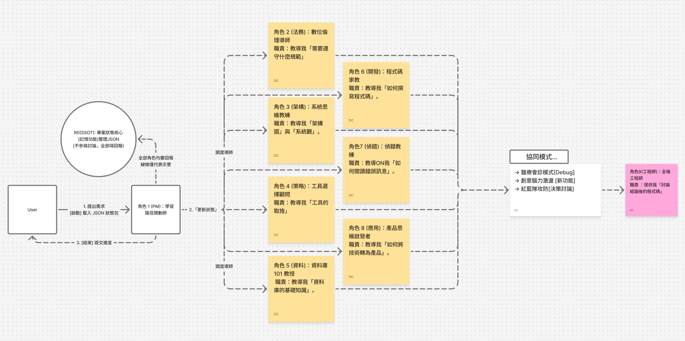

執行摘要：彌合「策略」與「執行」的鴻溝
本文旨在展示我 (沈廷翼) 作為一個 AI 專案經理 (PM) 與架構師，如何實踐一套完整的「人機協作」系統方法論。
本方法論的核心哲學是「人機協作，而非單靠 AI」。人類（PM）的角色是「架構師」，負責提出問題、定義規格、並做出最終決策。
這套方法論的設計，旨在解決一個常見的痛點：「策略規劃（要做什麼）」與「技術執行（如何落地）」之間的脫節。
本方法論透過三個層次來實現：
- 協作框架： 設計 AI 助手，使其成為可控的「專家團隊」。
- 決策原則： PM（人類）用以驅動 AI 思考「策略」的工具。
- 執行支柱： PM（人類）與 AI 協同落地「技術」的工程紀律。
我的核心流程：MVP 優先的「架構可行性驗證」
我實踐的敏捷 (Agile)，並非「功能導向」，而是「架構導向 (Architecture-First)」。
在開發任何複雜功能前，我會優先使用「MVP (最小可行產品)」來驗證「所選框架 (Framework) 與架構 (Architecture) 的可行性」。這能最大程度地降低在錯誤的技術棧上投入過多資源的風險。
- 實踐案例 (V1.0)： 驗證「本地端 (VS Code) -> 版控 (Git) -> 雲端 (GitHub) -> 持續部署 (Railway)」這套「雲端 DevOps 架構（支柱 5 & 6）」是否可行。
- 結論： 可行。這確保了「技術管理流程」是健壯的。
- 實踐案例 (V4.0)： 由於 V2.0 架構的局限性，驗證「Supabase (BaaS)」這個「新架構（支柱 1）」是否能成為「可行」的替代方案。
- 結論： 可行。這展示了 PM 評估並「遷移 (Pivot)」至更優架構的決策能力。
這個「驗證 -> 決策（或 Pivot）-> 迭代」的流程，是我用來駕馭「三大層次」與「六大支柱」的引擎。
層次一：協作框架 (我如何「設計」AI)
為實現高效的人機協作，第一步是為 AI 建立一個「作業系統」，將其從一個「問了才答」的聊天機器人，轉變為一個「多角色、有記憶」的專業團隊。
我設計的「人機協作」系統架構。
角色 A：R0 專案狀態核心 (Project State Kernel)
- [定義] 為 AI 助手安裝「專案記憶體」與「專案秘書」。
- [設計] 要求 AI 必須在內部維護一個「單一事實來源 (SSOT)」，用結構化格式（如 JSON）記住專案的完整狀態 (規格, 綱要, 程式碼)。
- [價值] 這將 AI 從「無狀態」轉變為「有狀態」。AI 能「記住」專案在 V3.0 決定的資料庫結構，並在 V6.0 開發新功能時主動調用，實現了「專案連續性」。
角色 B：R-N 角色導向的任務委派 (Role-Oriented Delegation)
- [定義] 拒絕讓 AI「通才」回答，而是將其設計為一個「随需調用的專家團隊」。
- [設計] PM 不直接對 AI 下令，而是將任務「委派」給為 AI 設計的「虛擬專家角色」。
- [協作實例]
- `R4 (架構導師)` (技術顧問)： 呼叫 R4 來提供架構決策分析。
- `R7 (偵錯專家)` (鑑識科學家)： 呼叫 R7 來執行「RCA 根本原因分析」SOP。
- `R2 (資安官)` (資安稽核員)： 呼叫 R2 來確保「內建倫理與安全」。
層次二：決策原則 (我如何「驅動」AI 思考)
這是 PM（人類）的核心價值所在。在「AI 協作框架」的基礎上，PM 運用這些原則來主導「策略」的制定。
原則 A：【策略層】數據優先 (Data-First Strategy)
- [定義] 在專案「啟動前」的核心原則。必須蒐集市場、競品、使用者研究等「**正規資料**」，來決定「**我們該做什麼 (What to build)**」。
- [協作成果] PM 驅動 `R4 (AI 導師)` 協助進行「競品分析」，AI 提供的「正規資料」協助 PM 做出「選擇 Supabase」的最終架構決策。
原則 B：【營運層】數據分析 (Data-Driven Analytics)
- [定義] 在專案「上線後」的核心原則。必須蒐集「**使用者行為數據**」，來決定「**我們該優化什麼 (What to optimize)**」。
- [協作成果 (GA/GTM)]
- PM 決策 (策略)：「我必須監測有人進來網站」，這啟動了「數據分析」原則。
- AI (數據分析師)： 提供了「安裝 GA/GTM」的技術路徑。
- PM 洞察 (風險)： PM 立刻提出質疑：「但我換地方換 wifi 不就會 ip 變了?」（展現人類的批判性思維）。
- AI (數據分析師)： 根據 PM 的質疑，提供了「多層次過濾」的進階解決方案。
原則 C：【備援】費米推理 (Fermi Estimation)
- [定義] 當「原則 A」與「原則 B」的數據都不可被獲取時（例如預測全新市場），PM 會要求 AI 切換至「費米推理模式」，將問題拆解為「邏輯估算」。
- [協作成果] 這是在缺乏數據下估算潛在市場規模 (TAM/SAM) 的關鍵 PM 技能，確保決策依然基於「邏輯」而非「猜測」。
層次三：六大執行支柱 (協同 AI 實作)
在「策略」透過「決策原則」制定後，便進入「敏捷實作」階段。這六大支柱是確保專案落地、管控風險的工程紀律：
支柱一：架構選型與優化
- [人機協作] PM（人類）提出 V4.0 升級需求，`R4 (AI 導師)` 分析 Supabase 的優勢。PM（人類）做出「遷移」的最終決策。
- [價值] 展現了 PM 評估並「遷移」至更優架構的決策能力。
支柱二：資料庫結構為核 (Database-Centric Design)
- [人機協作] PM（人類）設計 `products` 與 `customer_contacts` (V6.1) 的業務邏輯，AI 助手協助生成「關聯式資料表」的 SQL 語法。
- [價值] 確保「技術性相關需求」從一開始就在資料層被正確定義。
支柱三：系統化偵錯 (Systematic Debugging)
- [人機協作] PM（人類）發現 V3.0 「前端讀取失敗」的現象，`R7 (AI 偵錯)` 提供「隔離變因法」SOP。PM 執行 SOP 並找出根本原因 (RCA)。
- [價值] PM 不僅是回報問題，而是能領導 RCA（根本原因分析）流程。
支柱四：內建倫理與安全 (Ethics & Security by Design)
- [人機協作] PM（人類）提出「訪客不能寫入資料」的嚴格要求。`R2 (AI 安全官)` 提供了 Supabase RLS (Row Level Security) 的技術實現方案。
- [價值] 在安全與合規 (Compliance) 層面展現了風險管控。
支柱五：本地端開發流程 (Local Development Process)
- [人機協作] PM（人類）在 VS Code 中編寫程式碼，並執行 `Git` 版控。`R0 (AI 核心)` 則「記住」相關的 `code_blocks`。
- [價值] 建立一致且可追溯的開發流程。
支柱六：雲端架構與服務串接 (Cloud Architecture & Integration)
- [人機協作] PM（人類）提出 V7.0「履歷」和「商品」必須分離的「架構解耦」策略。`R4 (AI 導師)` 確認這是「微服務」的最佳實踐，並提供 Railway 上「兩個獨立服務」的部署方案。
- [價值] 展現了 PM 規劃「跨系統整合」的複雜架構能力。
總結：人機協作的敏捷實踐
這套完整的「（MVP 架構可行性）敏捷流程 + 人機協作框架 + 三大決策原則 + 六大執行支柱」方法論，構成了一個可循環、可擴展的系統。
它證明了 PM（人類）的角色不是被 AI 取代，而是升級為「AI 協作系統的設計者」與「最終決策的架構師」。